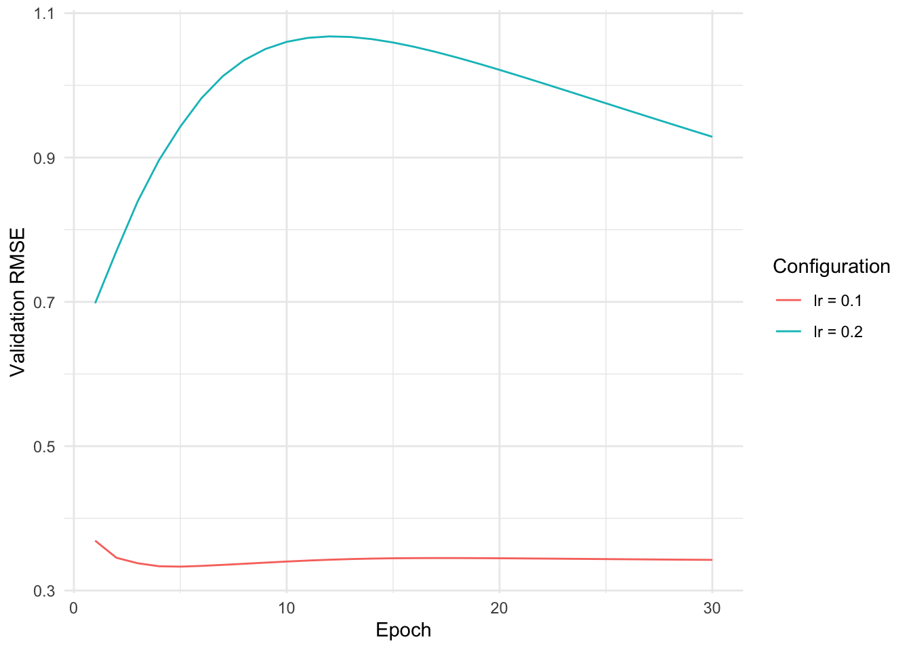
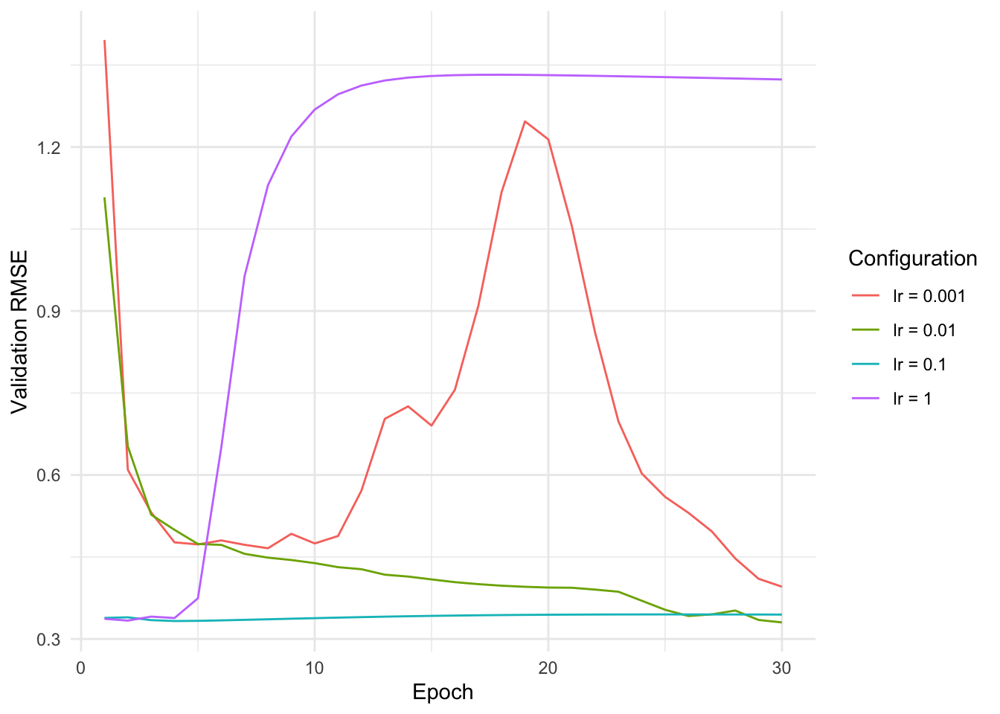
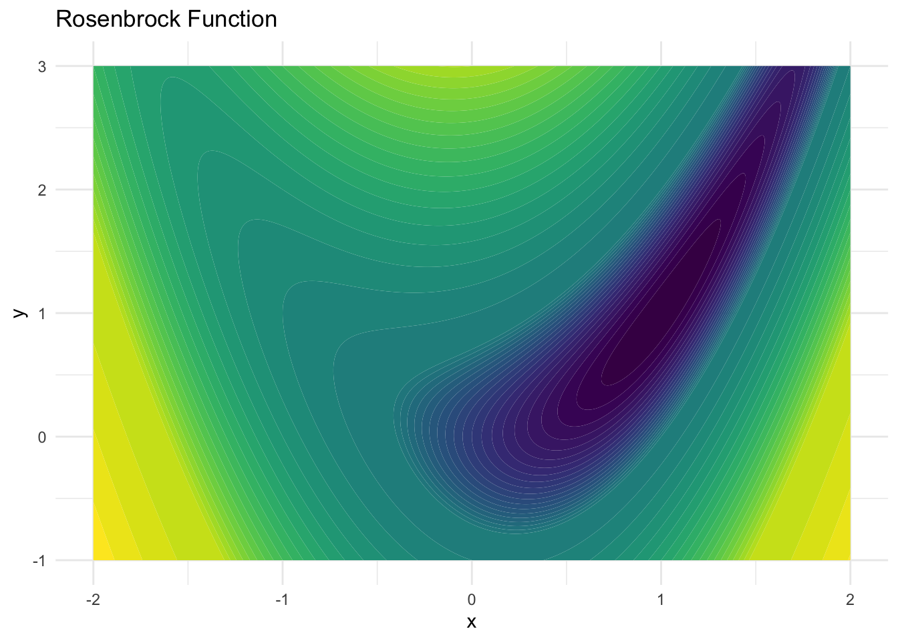

In this exercise, the task is to play around with the settings for the optimization of a neural network. We start by generating some (highly non-linear) synthetic data using the mlbench package.
The code to compare different optimizer configurations is provided through the (provided) compare_configs() function. It takes as arguments:
epochs: The number of epochs to train for. Defaults to 30.
batch_size: The batch size to use for training. Defaults to 16.
lr: The learning rate to use for training. Defaults to 0.01.
weight_decay: The weight decay to use for training. Defaults to 0.01.
beta1: The momentum parameter to use for training. Defaults to 0.9.
beta2: The adaptive step size parameter to use for training. Defaults to 0.999.
One of the arguments (except for epochs) must be a list of values. The function will then run the same training configuration for each of the values in the list and visualize the results.
Implementation of compare_configs
library(ggplot2)compare_configs <-function(epochs =30, batch_size =16, lr =0.01, weight_decay =0.01, beta1 =0.9, beta2 =0.999) {# Identify which parameter is a list args <-list(batch_size = batch_size, lr = lr, weight_decay = weight_decay, beta1 = beta1, beta2 = beta2) is_list <-sapply(args, is.list)if (sum(is_list) !=1) {stop("One of the arguments must be a list") } list_arg_name <-names(args)[is_list] list_args <- args[[list_arg_name]] other_args <- args[!is_list]# Run train_valid for each value in the list results <-lapply(list_args, function(arg) { network <-with_torch_manual_seed(seed =123, nn_mlp()) other_args[[list_arg_name]] <- argtrain_valid(network, ds_train = ds_train, ds_valid = ds_valid, epochs = epochs, batch_size = other_args$batch_size,lr = other_args$lr, betas =c(other_args$beta1, other_args$beta2), weight_decay = other_args$weight_decay) })# Combine results into a single data frame combined_results <-do.call(rbind, lapply(seq_along(results), function(i) { df <- results[[i]] df$config <-paste(list_arg_name, "=", list_args[[i]]) df })) upper <-if (max(combined_results$valid_loss) >10) quantile(combined_results$valid_loss, 0.98) elsemax(combined_results$valid_loss)ggplot(combined_results, aes(x = epoch, y = valid_loss, color = config)) +geom_line() +theme_minimal() +labs(x ="Epoch", y ="Validation RMSE", color ="Configuration") +ylim(min(combined_results$valid_loss), upper)}train_loop <-function(network, dl_train, opt) { network$train() coro::loop(for (batch in dl_train) { opt$zero_grad() Y_pred <-network(batch[[1]]) loss <-nnf_mse_loss(Y_pred, batch[[2]]) loss$backward() opt$step() })}valid_loop <-function(network, dl_valid) { network$eval() valid_loss <-c() coro::loop(for (batch in dl_valid) { Y_pred <-with_no_grad(network(batch[[1]])) loss <-sqrt(nnf_mse_loss(Y_pred, batch[[2]])) valid_loss <-c(valid_loss, loss$item()) })mean(valid_loss)}train_valid <-function(network, ds_train, ds_valid, epochs, batch_size, ...) { opt <-optim_ignite_adamw(network$parameters, ...) train_losses <-numeric(epochs) valid_losses <-numeric(epochs) dl_train <-dataloader(ds_train, batch_size = batch_size) dl_valid <-dataloader(ds_valid, batch_size = batch_size)for (epoch inseq_len(epochs)) {train_loop(network, dl_train, opt) valid_losses[epoch] <-valid_loop(network, dl_valid) }data.frame(epoch =seq_len(epochs), valid_loss = valid_losses)}
You can e.g. call the function like below:
compare_configs(epochs =30, lr =list(0.1, 0.2), weight_decay =0.02)

Explore a few hyperparameter settings and make some observations as to how they affect the trajectory of the validation loss.
Solution
There is not really a ‘solution’ to this exercise. We will go through some of the configurations and explain what is happening.
Learning rate
compare_configs(epochs =30, lr =list(1, 0.1, 0.01, 0.001))

Batch Size
For this configuration, we can see that larger batch sizes lead to considerably better results as they allow for more updates for the given number of epochs.
For the momentum parameter, we can observe that too large values for the momentum parameter lead to oscillations because the local information is not used enough.
For larger values of beta2, the loss trajectory is considerably smoother. While smaller values will – in this scenario – lead to more oscillations, they also lead to a better fit. Once the value of beta2 is getting too small, the performance will also deteriorate.
In this exercise, you will build a gradient descent optimizer with momentum. As a use case, we will minimize the Rosenbrock function. The function is defined as:
The ‘parameters’ we will be optimizing is the position of a point (x, y), which will both be updated using gradient descent. The figure below shows the Rosenbrock function, where darker values indicate lower values.

The task is to implement the optim_step() function.
optim_step <-function(x, y, lr, x_momentum, y_momentum, beta) { ...}
It will receive as arguments, the current values x and y, as well as the momentum values x_momentum and y_momentum (all scalar tensors). The function should then:
Perform a forward pass by calling the rosenbrock() function.
Call $backward() on the result of the forward pass.
First multiply both momentum values in-place using $mul_() with beta, then add (1 - beta) times the gradient to the momentum values using $add_().
Update the parameters using $sub_() with lr * x_momentum and lr * y_momentum. Perform this update within with_no_grad() as we don’t want to track the gradients for the parameters.
To perform in-place updates, you can use the $mul_() and $add_() methods.
In exercise 2, we have optimized the Rosenbrock function. Does it make sense to also use weight decay for this optimization?
Solution No, it does not make sense to use weight decay for this optimization as it is intended to prevent overfitting which is not a problem in this case. This is, because there is no uncertainty in the function we are optimizing.